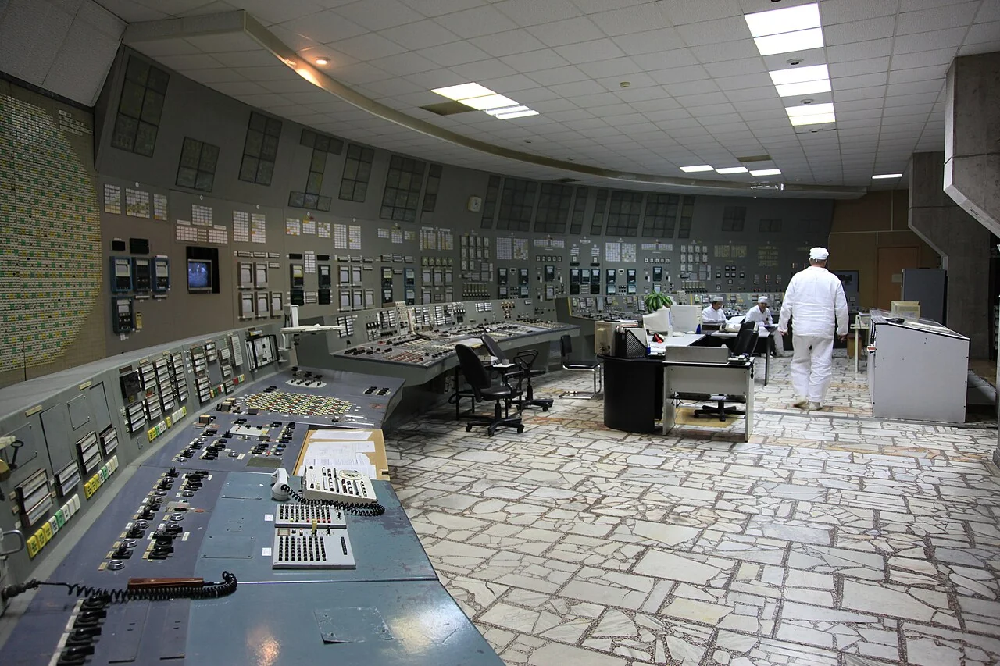
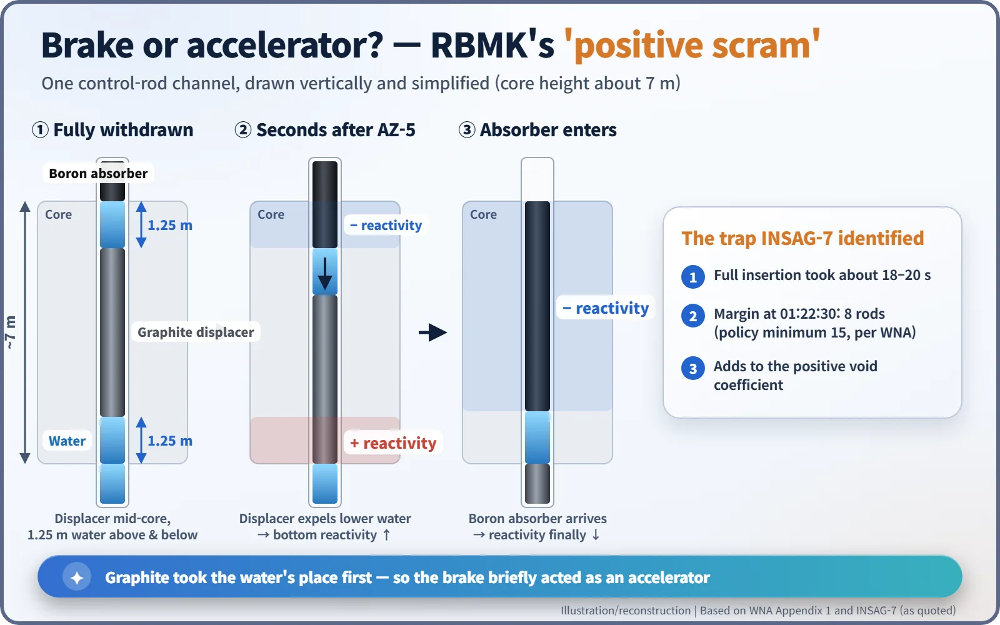
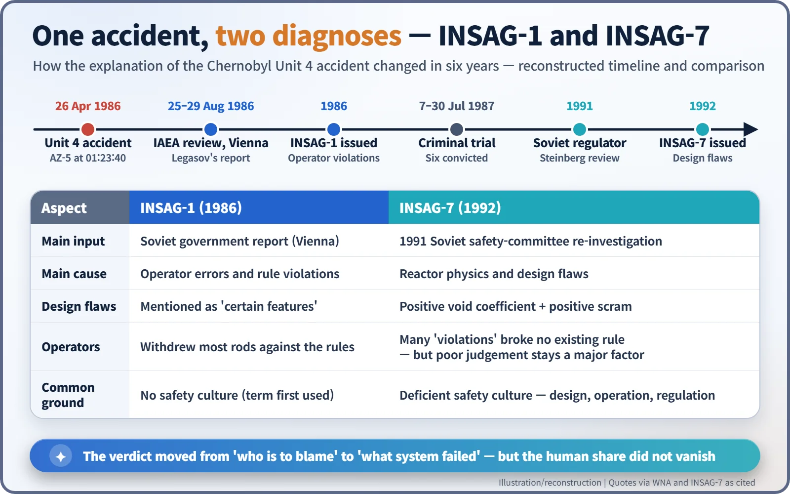

Nuclear History · 256
From Operator Error to Design Flaw? How the Chernobyl Diagnosis Changed (INSAG-1 to INSAG-7)
In 1986 the blame fell mainly on the operators; by 1992 a new Soviet investigation had put the RBMK's design at the centre, without clearing the people in the control room.
In 1986 the IAEA's safety advisers accepted the Soviet account that Chernobyl was caused above all by operators breaking the rules. Six years later, after a new Soviet investigation, their update INSAG-7 put the reactor's design at the centre: a positive void coefficient and control rods that briefly added power when they should have cut it. The operators were not cleared, but the question changed from "who is to blame" to "what kind of system failed".
Two sentences, six years apart
Put two sentences side by side.
"The accident was caused by a remarkable range of human errors and violations of operating rules."
"The physical characteristics of the reactor made possible its unstable behaviour."
Both describe the same accident, and both come from the same expert body, writing six years apart. The first reflects the 1986 summary report of the International Nuclear Safety Advisory Group (INSAG) of the International Atomic Energy Agency (IAEA), known as INSAG-1. The second comes from its 1992 update, INSAG-7. Between them, the official story of why Chernobyl Unit 4 failed was rewritten. [2]

Five hours in Vienna
From 25 to 29 August 1986, four months after the accident, the IAEA held a Post-Accident Review Meeting in Vienna. The Soviet delegation was led by the chemist Valery Legasov (1936–1988). By most accounts he presented a 388-page report over roughly five hours. For a famously secretive state, it was a remarkable amount of disclosure. [6]
The storyline was clear. Early on 26 April, during a test of whether a coasting turbine could keep cooling pumps running, the operators had broken the rules: they had pulled most of the control rods out of the core and run the reactor in an unstable low-power state, about 200 MW thermal against a rated 3,200 MW. Power then ran away. INSAG-1 largely accepted this account. In the words quoted by the World Nuclear Association (WNA), "The operators deliberately and in violation of rules withdrew most control and safety rods from the core." The report also mentioned certain features of the reactor, but the weight fell on people. [2] [3]
That verdict went to court. From 7 to 30 July 1987, a temporary courtroom in the House of Culture in the town of Chernobyl tried six men, and all six were convicted. Deputy chief engineer Anatoly Dyatlov (1931–1995), who directed the test, plant director Viktor Bryukhanov (1935–2021) and chief engineer Nikolai Fomin each received ten years in a labour camp; the other three received five, three and two years. [5] [6]
1991: reopening the file
What shook the verdict was a fresh investigation from inside the Soviet Union. In 1991 the USSR State Committee for the Supervision of Safety in Industry and Nuclear Power set up a commission chaired by Nikolai Steinberg, who had served as Chernobyl's chief engineer in the year after the accident. The IAEA translated its report and published it as Annex I to INSAG-7. [1] [6]
INSAG-7 put two design features at the centre. The first was a large positive void coefficient. In an RBMK, graphite slows the neutrons down, while the cooling water absorbs some of them. When the water boils and steam bubbles (voids) form, less water means fewer neutrons absorbed, so power rises further. More steam, more power: a feedback loop pointing the wrong way.
The second was the "positive scram". A scram is an emergency shutdown. Below each RBMK control rod hung a graphite "displacer". With a rod fully withdrawn, the displacer sat in the middle of the core with a 1.25 m column of water above and below it. When the operator pressed the emergency button AZ-5 at 01:23:40, the rods started down and the displacers first pushed water out of the bottom of the core. Graphite took the place of neutron-absorbing water, so reactivity at the bottom of the core went up rather than down. Full insertion took about 18–20 seconds. It was like stamping on the brake and finding that, for the first few seconds, it worked as an accelerator. [3] [6]

A third factor sharpened the trap: the operating reactivity margin (ORM), the reserve of control rods kept in the core. Calculations put it at the equivalent of 8 rods at 01:22:30, while operating policy, according to the WNA, required at least 15. INSAG-7 noted that procedures treated the ORM mainly as a tool for controlling power and that it "was not treated as an operational safety limit". The operators had never been taught what that number really meant for safety. [2] [3]
So were the operators innocent?
Not quite, and this is where a popular misreading creeps in. INSAG-7 did not clear the operators. It accepted that many acts labelled "violations" in 1986 broke no rule that actually existed at the time, and that low-power operation was not forbidden. But it kept its criticism of unapproved on-the-spot changes to the test procedure and judged that critical actions of the operators "were most ill judged". The human factor, it concluded, "has still to be considered as a major element in causing the accident." [2] [6]
The people at the centre saw it differently. In September 1995, Dyatlov wrote in Nuclear Engineering International, under the headline "Why INSAG has still got it wrong", that "the reactivity overshoot occurred solely as a result of the erroneous design of the rods." That is his position as a participant, and it still does not line up neatly with the court or the report. [4]
Legasov's own role is also debated. He took his own life on 27 April 1988, the day after the second anniversary of the accident. In memoirs published after his death he wrote that "it is impossible to find a single culprit, a single initiator of events." According to a story often told, he said he had not lied in Vienna but had not told the full truth. The courtroom scenes of the 2019 television drama Chernobyl are dramatised and should not be read as the record. [2]
Where the two reports agreed
On one point the two reports spoke with one voice: safety culture. INSAG-1 was the first to use the term. INSAG-7 widened it, concluding that the accident "can be said to have flowed from a deficient safety culture", not only at the Chernobyl plant but throughout Soviet design, operating and regulatory organisations. The phrase went on to become a cornerstone of international nuclear safety. [1] [6]

As information opened up and an independent body looked again, the picture shifted from "who is to blame" to "what kind of system failed". The human share did not disappear. Perhaps the lasting lesson of Chernobyl's two reports is that a good accident investigation is not about choosing a culprit; it is about drawing a map that helps prevent the next accident.